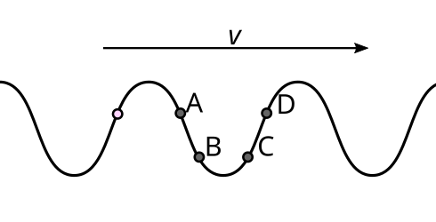
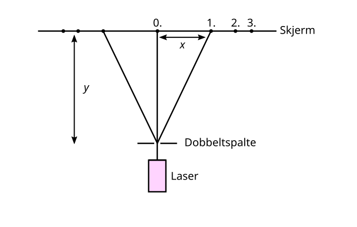
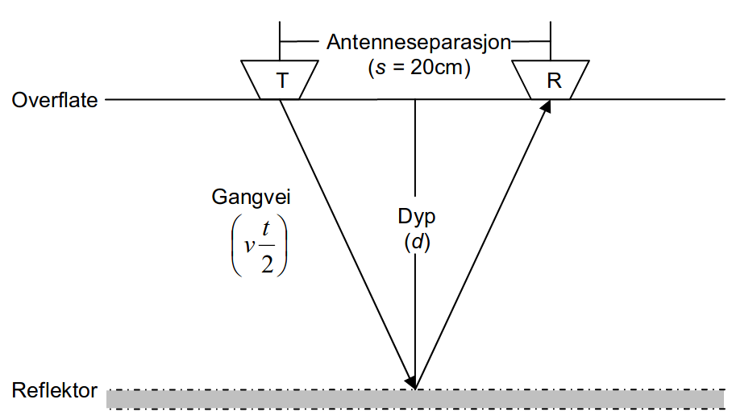

Vurdering i bølger og atomer
Del 1
Totalt 15 poeng.
Oppgave 1
Hvilken påstand stemmer?
- a
- To bølger kan ha samme bølgefart og bølgelgende, men ulik amplitude.
- b
- To bølger kan ha samme bølgefart og bølgelengde, men ulik frekvens.
- c
- To bølger med samme bølgefart og frekvens, er alltid i fase.
- d
- To bølger som er i fase, har samme amplitude.
Oppgave 2
Hvilken påstand stemmer ikke?
- a
- Når en gjenstand får svinge upåvirket, svinger det med sin egenfrekvens.
- b
- Når en svingning påvirkes i takt med egenfrekvensen, kan resonans oppstå.
- c
- Massen til en gjenstand påvirker gjenstandens egenfrekvens.
- d
- Egenfrekvensen til en gjenstand avgjøres av hvor lang tid det tar før gjenstanden er i ro.
Oppgave 3
Hvilken påstand stemmer?
- a
- Lyd forplanter seg i luft via langsbølger.
- b
- Tversbølger transporterer energi mot bølgeretningen.
- c
- Langsbølger er alltid tregere enn en tversbølge i samme bølgemedie.
- d
- Langsbølger transporterer energi mot bølgeretningen.
Oppgave 4
Hvilken påstand stemmer?
- a
- Lysfarten er 300 000 km/s, uavhengig av hvilket medie lyset går i.
- b
- Når lys går fra et objekt, reflekteres i et speil og treffer øyet ditt, har det gått kortest mulige vei som er innom speilet.
- c
- Refleksjonslodd brukes kun når et speil ligger vannrett.
- d
- Refleksjonsvinkelen, α, er alltid 90°
Oppgave 5
Hvilken påstand stemmer for to bølger, \(b_1\) og \(b_2\)?
- a
- Destruktiv interferens oppstår når bølgebunn fra \(b_1\) møter bølgebunn fra \(b_2\).
- b
- Destruktiv interferens oppstår når bølgebunn fra \(b_1\) møter bølgetopp fra \(b_2\).
- c
- Konstruktiv interferens oppstår kun om \(b_1\) og \(b_2\) har samme amplitude.
- d
- Konstruktiv interferens oppstår når laveste bølgebunn fra \(b_1\) møter høyeste bølgetopp fra \(b_2\).
Oppgave 6
Hvilken påstand stemmer?
- a
- Lydfarten er 340 m/s i alle medier.
- b
- Lydfarten i luft er temperaturavhengig.
- c
- Lyd forplanter seg i vann via tversbølger.
- d
- Vi øker amplituden til en lydbølge ved å øke frekvensen til lydkilden.
Oppgave 7
Hvilken påstand om Rutherford stemmer?
- a
- Han oppdaget alfapartiklene.
- b
- Han fant ut at elektronet var negativt ladet.
- c
- Han fant ut at atomkjernen utgjorde en liten del av hele atomet.
- d
- Han fant ut at lysets hastighet er 300 000 km/s.
Oppgave 8
Hvilken påstand stemmer?
- a
- Et atom som eksiteres, eksiteres alltid til energinivået over det det var ved.
- b
- For at et atom skal eksiteres, må atomet tilføres energi.
- c
- Et atom tilføres energi når det emiterer et foton.
- d
- I samme øyeblikk et atom absorberer et foton, emiterer det et foton.
Oppgave 9
Hvilken påstand om fotoner stemmer?
- a
- De har konstant akselerasjon, men en maksfart på 300 000 km/s.
- b
- De består av to protoner og to nøytroner.
- c
- Energien til et foton avgjøres av dets frekvens.
- d
- Refleksjon oppstår når to fotoner kolliderer.
Oppgave 10
Bohrs modell for hydrogenatomet kan skrives \[E_n = -\frac{B}{n^2}.\] Hvilken påstand stemmer om denne modellen?
- a
- Nullnivået er satt til å være den høyste energien hydrogenatomet kan ha, 0. Atomet er da ionisert.
- b
- \(B\) er energien til et ionisert hydrogenatom, \(-2,18\cdot 10^{-18}\,\textrm{J}\).
- c
- \(n\) er bølgelengen til hydrogenatomet, og kan kun ta heltallige verdier.
- d
- Grunnivået er satt til \(n=0\), hydrogenatomet har da uendelig energi.
Bølger
De neste tre oppgavene tar utgangspunkt i figuren under.

Illustrasjon 1 Bølge
Oppgave 11
Er det rosa punktet på vei opp eller ned?
- a
- Opp
- b
- Ned
- c
- Umulig å si
- d
- Det er i ro
Oppgave 12
Hvilket punkt svinger i fase med det rosa punktet?
- a
- A
- b
- B
- c
- C
- d
- D
Oppgave 13
Er det en avstand på én bølgelengde mellom noen av punktene?
- a
- Ja, mellom det rosa punktet og D.
- b
- Ja, mellom det rosa punktet og A.
- c
- Ja, mellom A og D.
- d
- Nei, siden ingen av punktene ligger på likevektslinja.
Dobbeltspalten
De neste to oppgavene tar utgangspunkt i figuren under.

Illustrasjon 2 Dobbeltspalteeksperiment
Oppgave 14
Hva skjer om vi øker avstanden mellom åpningene i dobbeltspalten?
- a
- \(x\) er uendret.
- b
- \(x\) øker.
- c
- \(x\) minker.
- d
- Det avhenger av \(y\).
Oppgave 15
Hva skjer om vi øker frekvensen i laserlyset?
- a
- \(x\) er uendret.
- b
- \(x\) øker.
- c
- \(x\) minker.
- d
- Det avhenger av \(y\).
Del 2
Totalt 30 poeng
Oppgave 1 (4 poeng)
Se på videoen under. Gjør overslag for svingningens periode og frekvens i tidsrommet fra 10 til 35 sekunder i klippet.
Oppgave 2 (6 poeng)
Illustrasjon 3 Dobbeltspalteforsøk
Vi ser videre på doobeltspalteforsøket fra oppgave 14 og 15 fra Del 1. Vi setter nå avstanden mellom åpningene i dobbeltspalten til d = 2,0 μm. Vi måler avstanden til veggen y = 3,00 m avstanden mellom 0. og 1. ordens maksimum x = 0,62 m.
- a
- Bestem bølgelengden til det ensfargede lyset.
- b
- Forklar hva vi vil se dersom vi bytter ut det ensfargede lytset med hvitt lys (alle farger).
Oppgave 3 (10 poeng)
- a
- Et av Bohrs postulater fortller om hva som skjer når hydrogenatomet går fra en høyere til en lavere energitilstand. Hva sier det andre postulatet?
- b
- Figuren under viser energinivåene i hydrogenatomet. Hvor stor er ioniseringsenergien?
Illustrasjon 4 Energinivåer i hydrogenatomet
- c
- Brukl Bohrs modell for hydrogenatomet til å regne ut de tre laveste energinivåene i hydrogenatomet.
- d
- Et hydrogenatom befinner seg i energitilstand \(n=3\). Hvilke energikvanter kan det sende ut ved direkte overgang fra denne energitilstanden? Hvilke frekvenser svarer det til?
- e
- Hvilken energiovergang på figurer vil gi stråling med den minste bølgelengden? Hva er bølgelengden i dette tilfellet?
- f
- Om vi bruker et enkelt spektroskop som «deler opp» synlig lys til å se på emisjonsspekteret til hydrogen, ser vi bare én av seriene (Lyman, Balmer, Paschen). Gjør rede for hvilken av seriene vi vil se.
Oppgave 4 (10 poeng)
Figuren under viser et måleoppsett for å måle istykkelsen i en isbre. Dette måleutstyret fungerer ved at et radarsignal sendes ned gjennom isen, dette reflekterers i berggrunnen under isen («reflektor»), før det plukkes opp av mottakeren. Ved hjelp av tiden signalet bruker fra senderen til mottakeren, kan vi regne ut istykkelsen.

Illustrasjon 5 «Massebalanse på Kronebreen/Holtedahlfonna, Svalbard» av Anders Baumberger (2004) (lenke)
Her er \(s\) avstanden mellom senderen (T) og mottakeren (R), \(v\) er signalfarten, og \(d\) er bretykkelsen. \(t\) er tiden signalet bruker fra senderen til mottakeren.
- a
- Vis at isdybden kan uttrykkes \[d = \sqrt{\frac{(vt)^2}{4} - \frac{s^2}{4}}.\]
- b
- Under et forsøk blei gangtiden, \(t\) målt til å være 55.34 ns. Bruk at radarsignalets fart er lysfarten i vakuum, 2,998⋅108 m/s, og regn ut isdybden under et forsøk hvor antenneseparasjonen var på 20 cm.
Under virkelige forsøk, brukes ikke lysfarten i vakuum som signalfart, men man tar høyde for at fotonene bremses ned av mediet de sprer seg i. Materialegenskapen som påvirker dette, kalles materialets dielektriske konstant (\(\varepsilon\)). Vi får da et uttrykk for signalfarten som kan skrives \[v = \frac{c}{\sqrt{\varepsilon}}.\]
- c
- Ifølge sammenhengen over, hva slags enhet har \(\varepsilon\)?
- d
- Ut fra det du veit om lysfarten i vakuum, kan du si noe om størrelsen til \(\varepsilon\)?
Det viser seg at \(\varepsilon\) korrelerer godt med et medies tetthet (\(\rho\)) alene. En empirisk (funnet via forsøk, ikke utledet fra naturlover) sammenheng er funnet til å være \[\varepsilon = (1 + 0,845\rho)^2,\] hvor \(\rho\) er materialets tetthet relativ til ferskvanns tetthet.
Ren breis har en relativ tetthet på \(\rho = 0,9\).
- e
- Bruk informasjonen over til å regne ut en ny signalfart, \(v\), for forsøket. Oppgi svaret både i enhet meter per sekund (m/s) og enhet meter per mikrosekund (m/μs).
- f
- Hvordan påvirker dette dybdeanslaget ditt fra oppgave b?